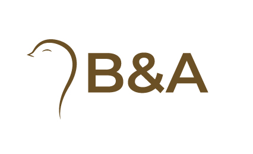
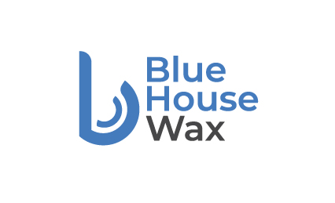
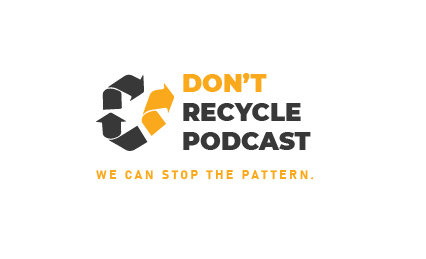
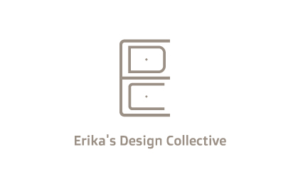

B&A
Logo for mobile application about Belgrade.
The logo presents the stylization of the sparrow as a symbol of Belgrade
and a question mark. The color is a mixture of brown and orange,
while the logo is printed in the font "Montserrat-Bold".

Blue House Wax
Homemade pastry bakery, the logo represents a stylized letter b in the shape
of a basket with pastries in it. The color is cyan-blue while the logotip is written
in the font "Montserrat-Semibold".

Don't recycle podcast
Podcast with goal to stop old fashion ways of thinking and teaching younger generations wrong mind sets. Logo represents recycle trash can with orange arrow pointing out of circle and moving forward out of pattern. It continues to word DON'T for the additional visual effect and awarness. Contrast is made by orange and dark gray colors while logotip is written in Montserrat-Bold.

❮
❯
Erica’s Design Collective
Logo for furniture designer. The letters E, D and C are stylized in a chest
of drawers. The color is dark brown while the logotip is written
in the font "Doppio One Regular".